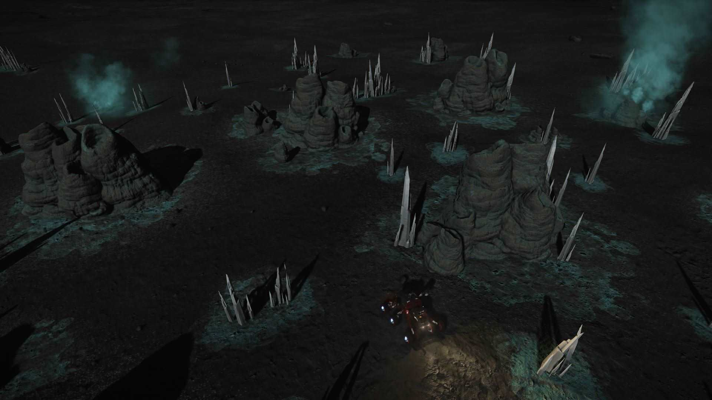
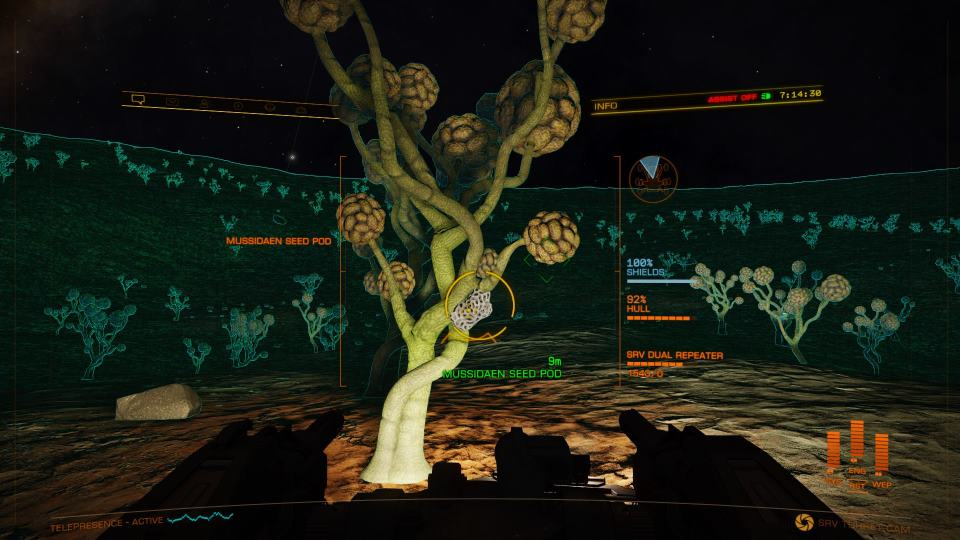

Поля кристаллических осколков — биологические участки на поверхности планет. На них растут кристаллы, каждый из которых даёт сырьевой материал 4-й категории , самой редкой среди сырья. В игре ровно семь групп сырьевых материалов, в каждой по одному материалу 4-й категории. Этот маршрут охватывает все семь. Остальные можно получить обменом у торговца сырьевыми материалами. В гайде приведены точные координаты всех семи мест.
Поля кристаллических осколков — биологические участки на поверхности планет. Кристаллы на них собирают с помощью планетохода. Кончик каждого кристалла даёт около 3 единиц одного сырьевой материал 4-й категории. Это самая редкая категория сырья: у сырья есть только категории с 1-й по 4-ю, пятой нет.
Всё дело в количестве групп. Всего есть семь групп сырьевых материалов, в каждой по одному материалу 4-й категории. Маршрут ниже охватывает все семь. Заполни запасы семи материалов, вернись и обменяй их на материалы более низких категорий у торговца сырьевыми материалами. Так заполнишь запасы 3-й и 2-й категорий в каждой группе за один рейс. Заодно продвинешься к открытию инженера Professor Palin, если ещё его не открыл.
На одном густом поле можно за несколько минут заполнить запас материала 4-й категории (до 150 единиц). Понадобится лишь часть запаса: при обмене на более низкие категории выход увеличивается.
Подойдёт любой корабль для исследований, даже без инженерных улучшений. Например, Asp Explorerуже вмещает почти всё нужное:
Без модуля Подробный сканер поверхности (DSS) не обойтись: он подтверждает наличие осколков и показывает густые участки до посадки.
Поля на всех планетах ищут одинаково. Сам сбор описан в разделе 4:
Запусти сканер обнаружения и открой карту системы. На планете с осколками указаны поверхностные сигналы, а сами кристаллы относятся к категории «Биологические», а не к геологическим сигналам.
Приблизься к планете до перехода в планирование.
Переключись в режим анализа и активируй сканер. Появится интерфейс прицеливания зондами.
Запускай зонды до отметки «Картографировано»; цель — от 90%. Зонды огибают горизонт, так что не обязательно видеть всю поверхность напрямую.
На карте поверхности переключи фильтр на биологические сигналы. Чем темнее или насыщеннее цвет, тем выше концентрация. Отдельной метки «Кристаллические осколки» нет: они входят в биологическую категорию.
В версии Live в левой панели нельзя выбрать точку с осколками. Лети по широте и долготе вручную: текущие координаты отображаются на приборной панели в орбитальном полёте.
Сядь рядом с густым участком, выпусти планетоход и приступай к сбору по инструкции в разделе 4.
До известных мест гораздо быстрее добраться по координатам. DSS Карта нужна прежде всего для проверки, есть ли осколки. Карта биологических сигналов пригодится, если ищешь совершенно новые места самостоятельно.
Оба вида участков собирают на планетоходе (SRV). Цикл один: подъедь, выстрели в часть растения или кристалла, содержащую материал, затем подбери обломки. Различаются только цель и выход материала за выстрел.

Подъедь к скоплению и наведи прицел на тонкие кристаллические иглы, выступающие из бугра, лучше всего у самого основания иглы. Толстое основание материала не даёт. Переставь планетоход, если бугор мешает прицелиться.
Сбей иглу плазменными скорострельными орудиями на турели планетохода. Несколько попаданий сломают иглу, и обломки сырья упадут на землю. Можно также выйти, сбить несколько игл личным оружием, а затем сесть обратно и собрать всё за один проезд.
Открой грузозаборник планетохода и проедь по обломкам. Они сразу попадут в невесомый инвентарь сырьевых материалов, а не в трюм. Одна игла даёт около 3 единиц сырья с этой планеты.
На густом поле десятки скоплений, гораздо больше, чем нужно. Когда участок рядом опустеет, просто переезжай к следующему скоплению.

Лишь примерно одно дерево из семи одновременно несёт плод, который можно собрать. Ищи на ветвях яркие бугристые коробочки семенные коробочки, похожие на золотисто-жёлтый попкорн.
Расстреляй плод орудиями планетохода и подбери обломки точно так же, как с осколками. Один плод даёт около 1 единицы (не подтверждено), меньше, чем кристаллическая игла. Зато в лесу деревьев много.
Плодоносящие деревья разбросаны по всему лесу. Собрав ближайшие, переезжай на новый участок.
В отличие от мест сбора промышленных материалов (Дэвс-Хоуп, место крушения Джеймсона), повторный вход не восстанавливает осколки или плоды надёжно. По проверкам игроков, собранное скопление остаётся пустым после выхода в меню. Естественное восстановление занимает недели. Плоды мозговых деревьев отрастают только после того, как вся игровая область выгружается (все игроки в ней выходят на рабочий стол), поэтому одиночный выход в меню тоже не сработает. Настоящий цикл — просто ехать к следующему скоплению или плодоносящему дереву. Поля достаточно большие, чтобы за один визит набрать запас 4-й категории с запасом в несколько раз.
Нажми на координаты, чтобы скопировать их. Четыре группы материалов есть в HIP 36601 (около 1 600 св. лет), ещё две — в соседней Outotz LS-K D8-3 (около 1 715 св. лет), а селен — близ Пузыря, в HR 3230 (всего около 425 св. лет). Расстояния указаны по прямой от Сола. Порядок остановок — в разделе 7.
| # | Система и небесное тело | Координаты | Материал | Группа | От Пузыря |
|---|---|---|---|---|---|
| 1 | HIP 36601 · планета C 1 A | -57.4599, 126.9543Копировать | Полоний | Группа 6 | ~1 600 св. лет |
| 2 | HIP 36601 · планета C 1 D | -51.2639, 14.7291Копировать | Рутений | Группа 3 | ~1 600 св. лет |
| 3 | HIP 36601 · планета C 3 B | -17.6769, -55.1800Копировать | Теллур | Группа 5 | ~1 600 св. лет |
| 4 | HIP 36601 · планета C 5 A | 3.5500, 111.5415Копировать | Технеций | Группа 2 | ~1 600 св. лет |
| 5 | Outotz LS-K D8-3 · планета B 5 A | -1.9216, -145.7013Копировать | Иттрий | Группа 1 | ~1 715 св. лет |
| 6 | Outotz LS-K D8-3 · планета B 5 C | -62.4905, 80.2426Копировать | Сурьма | Группа 7 | ~1 715 св. лет |
| 7 | HR 3230 · планета 3 A A | 45.66, -30.49Копировать | Селен | Группа 4 · см. раздел 8 | ~425 св. лет |
Выход на координаты — самая хлопотная часть. Если подойти правильно, уйдёт минута на планету; если делать это на планетоходе, можно провозиться час. Вот три правила:
Чем выше летишь, тем быстрее меняются координаты. Совмести их на высоте, затем спускайся почти вертикально.
Сначала подгони широту, держа курс 0° или 180°. Когда останется несколько градусов, поверни на 90°/270° и подгони долготу. Для первого места лети на юг до широты около −57,5°, затем на восток до долготы около +126,95°.
Удерживай первую координату в пределах ±1–2°, а вторую доведи до отклонения не больше ±0,5°. Затем ориентируйся визуально и используй волновой сканер планетохода. Полностью управлять спуском нельзя, поэтому последние несколько километров лети низко и медленно.
Два подходящих инструмента:
В обоих случаях вместо слежения за четырьмя числами достаточно повернуть корабль в указанную сторону.
Слетай за семью сырьевыми материалами 4-й категории и набери их до предела. По возвращении найди ближайшего торговца сырьевыми материалами через Inara и обменяй материал 4-й категории на 3-ю и 2-ю в каждой группе. Обычные материалы 1-й категории целенаправленно собирать не нужно: они накопятся по ходу полётов.
Две из трёх систем находятся рядом в глубине Кровавой окраины: HIP 36601 и Outotz LS-K D8-3 разделяет всего около 406 св. лет. HR 3230 находится близ Пузыря. Поскольку большую часть пути занимает перелёт между HR 3230 и дальними системами, загляни в HR 3230 по пути туда, а потом обойди обе дальние системы подряд:
Первая остановка на вылете. Собери селен на 3 A A (лес мозговых деревьев, разделе 4).
Дальний перелёт в Кровавую окраину. Собери материалы на всех четырёх телах: полоний, рутений, теллур и технеций (C 1 A / C 1 D / C 3 B / C 5 A).
Короткий перелёт за двумя материалами: иттрий и сурьма (B 5 A / B 5 C).
Вернись с полным запасом всех семи материалов 4-й категории и обменяй их у торговца сырьевыми материалами на более низкие категории.
Порядок почти не влияет на дистанцию: основной отрезок в любом случае — около 1 400 св. лет между HR 3230 и дальней парой. Если начать с HR 3230, соберёшь материал у Пузыря до долгого перелёта. Топливозаборник упростит перелёты. Лучше запланируй на весь маршрут один вечер, а не пытайся сделать его между делом.
| Собираемый материал 4-й категории | На что менять | Обычный материал 1-й категории |
|---|---|---|
| Иттрий G4 | Ниобий G3 · Ванадий G2 | Углерод G1 |
| Технеций G4 | Молибден G3 · Хром G2 | Фосфор G1 |
| Рутений G4 | Кадмий G3 · Марганец G2 | Сера G1 |
| Селен G4 | Олово G3 · Цинк G2 | Железо G1 |
| Теллур G4 | Вольфрам G3 · Германий G2 | Никель G1 |
| Полоний G4 | Ртуть G3 · Мышьяк G2 | Рений G1 |
| Сурьма G4 | Бор G3 · Цирконий G2 | Свинец G1 |
Семь верхних позиций покрывают все 28 сырьевых материалов. Менять на низшие категории внутри одной группы выгодно: одна единица G4 даёт несколько единиц G3 и так далее. Поэтому даже небольшого запаса G4 хватает на нижние категории.
Это материал 4-й категории, но для него нет поля кристаллических осколков в HIP 36601. В HR 3230 на 3 A A (место № 7) на самом деле растёт лес мозговых деревьев, а не кристаллы. Подъезжаешь и собираешь так же, но один плод даёт около 1 единицы, а не 3, поэтому сбор медленнее. Зато лес достаточно густой. Другой вариант — искать сырьё на поверхности богатого металлами тела, в составе которого указан селен. Сначала проверь состав: на большинстве тел его нет.
Углерод, фосфор, сера, железо и никель накапливаются попутно, пока ты летаешь и добываешь материалы. Не трать на них рейс за осколками.
Авторы оригинала сверили данные с источниками ниже.
Примечание: в версии Live в левой панели нельзя выбрать биологический или геологический участок. Лети по координатам или используй EDISON / EDbearing. Максимальная категория сырья — G4, предел запаса — 150.